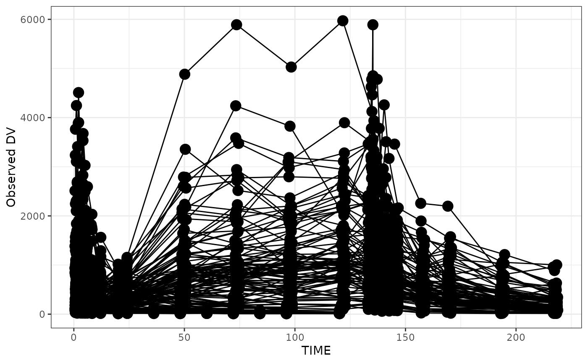

Some column names are assumed when calling pmplots plotting functions.
These names are generated by the functions listed in pm_axis_functions.
When these functions are invoked to select the data columns used for
plotting, hard-coded assumptions by pmplots are made (e.g., time is TIME).
When user-defined aliases are set, these aliases are used in place of the
canonical names assumed by pmplots. Aliases are only applied when these
pm_axis_functions are invoked to select the data column. See pm_col_id()
for aliasing ID through a global R option.
See Examples.
pm_aliases() prints the currently active aliases.
pm_set_aliases() registers one or more aliases mapping a data column name
to a canonical pmplots column name.
pm_clear_aliases() removes all registered aliases.
pm_show_canonical() returns the canonical column names that can be aliased.
pm_aliases()
pm_set_aliases(...)
pm_clear_aliases()
pm_show_canonical()
# The canonical name for time is `TIME`
pm_axis_time()
#> [1] "TIME//Time {xunit}"
# If you want to redirect to `TAFD` whenever the canonical name is `TIME`
# you can set an alias
pm_set_aliases(TAFD = TIME)
# Now, whenever canonical time is requested, pmplots redirects to `TAFD`
pm_axis_time()
#> [1] "TAFD//Time {xunit}"
# See current aliases
pm_aliases()
#> • data TAFD --> TIME in pmplots
# Clear aliases
pm_clear_aliases()
# There is no canonical name for `WT`, so this will fail
try(pm_set_aliases(WEIGHT = WT))
#> Error in pm_set_aliases(WEIGHT = WT) :
#> only certain columns can be aliased; see `pm_show_canonical()`.
# Because this call does not invoke `pm_axis_time`, no alias redirection
# will occur; in this case the user should compute the alias and provide
# the requested column name (e.g. `TAFD`) in the call.
data <- pmplots_data_obs()
dv_time(data, x = "TIME")
